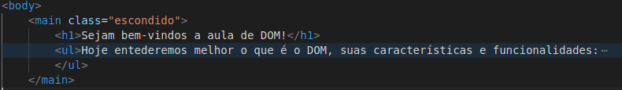
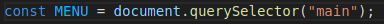
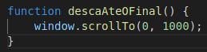
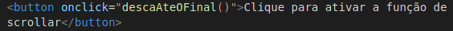

Hoje entederemos melhor o que é o DOM, suas características e funcionalidades:
- O que é DOM?
- O que são os objetos "window" e "document"?
- Diferença de "getElementById", "getElementsByClassName", "querySelector", "querySelectorAll"
- O que é um "Element" no JavaScript?
- Diferença de "innerHTML", "innerText" e "textContent"
- Qual a diferença entre uma "NodeList" e uma array comum? Como transformar a "NodeList" em uma array?
- Como criar elementos via JavaScript com "document.createElement" e "element.appendChild"
O que é DOM?
DOM significa "Document Object Model", em uma tradução livre seria algo como "Modelo de Objeto de
Documento", mas o que isso significa?
Resumidamente é uma forma do Java Script receber uma informação do HTML e conseguir trabalhar com ela, ou
seja, o Java Script que, a princípio, seria incapaz de manipular qualquer elemento do HTML agora pode
fazê-lo através do DOM.
Podemos averiguar isso a partir da imagem abaixo:
Aqui temos a estrura HTML do menu principal desta apresentação

Já aqui temos a criação de uma constante global "MENU" que recebe como valor a tag "main" do documento HTML

A partir disso, podemos usar "MENU" no Java Script para, dinamicamente, manipular o próprio "main", tags que
estejam dentro dele, ou até mesmo alterar seu estilo.
O que são os objetos "window" e "document"?
Agora que entendemos um pouco melhor o conceito básico de DOM podemos seguir para a definição de "Window" e "Document".
- Document:
Retomando o exemplo anterior, vimos que "MENU" está armazenando a tag "main" para futura manipulação no Java Script.
Sendo assim, ("main") representa a tag selecionada em si;
Já "QuerySelector" é, como o próprio nome sugere, o seletor que busca a tag ou classe, mas isso trataremos nos próximos tópicos;
Por fim temos "document" que é a representação do documento HTML inteiro dentro do Java Script.
Ou seja, toda vez que chamamos "document" dentro do Java, estamos em última instância fazendo uma busca em todo o HTML ao qual o Script está relacionado.
- Window:
Enquanto "Document" representa o HTML em si, "Window" representa a janela a qual o usuário está acessando o conteúdo. Um dos comandos mais comuns e que usaremos de exemplo do uso de "Window" é o "window.scrollTo(x, y)" o qual scrolla a tela de exibição diretamente para o valor de "x" na horizontal e para o valor de "y" na vertical. Considere as imagens abaixo:
Aqui temos a função que ao ser ativada, deve scrollar a tela do navegador 1000 pixels para baixo:

Já aqui temos o botão que chamará a função ao ser clicado:

Agora clique no botão abaixo para testar
GIT GUD!
Diferença de "getElementById", "getElementsByClassName", "querySelector", "querySelectorAll"
O que é um "Element" no JavaScript?
Diferença de "innerHTML", "innerText" e "textContent"
Qual a diferença entre uma "NodeList" e uma array comum? Como transformar a "NodeList" em uma array?
Como criar elementos via JavaScript com "document.createElement" e "element.appendChild"